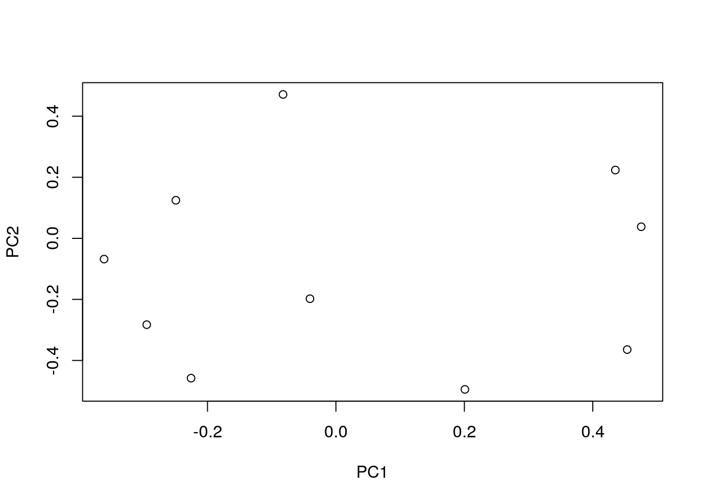
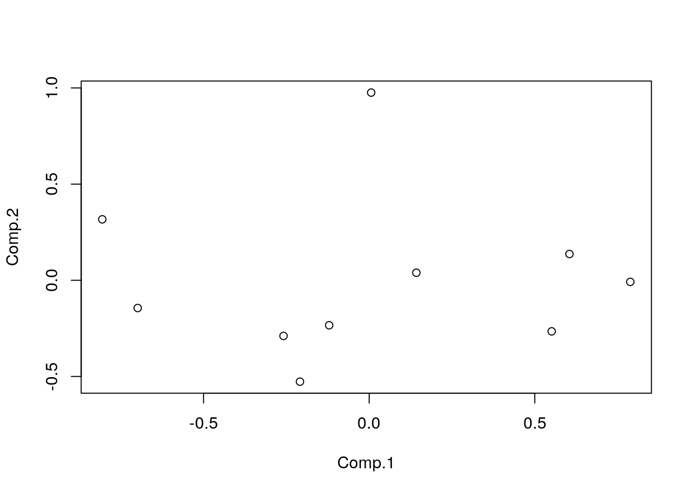
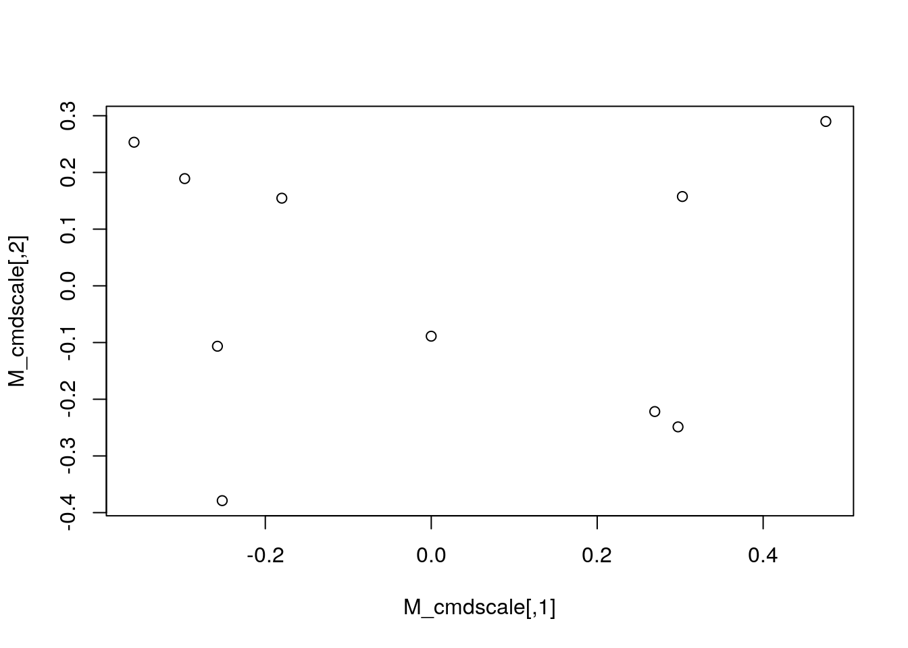

Many has been said about the relation of PCA and MDS. For instance this, or this other one on the practical point of view, however it has been different. In R we have on base (really stats package) three functions: prcomp, princomp and cmdscale
We will compare the outpot of the three of them on this dataset:
set.seed(547913)
x <- runif(100)
M <- matrix(x, ncol = 10, nrow = 10)prcomp
stats:::prcomp.default## function (x, retx = TRUE, center = TRUE, scale. = FALSE, tol = NULL,
## rank. = NULL, ...)
## {
## chkDots(...)
## x <- as.matrix(x)
## x <- scale(x, center = center, scale = scale.)
## cen <- attr(x, "scaled:center")
## sc <- attr(x, "scaled:scale")
## if (any(sc == 0))
## stop("cannot rescale a constant/zero column to unit variance")
## n <- nrow(x)
## p <- ncol(x)
## k <- if (!is.null(rank.)) {
## stopifnot(length(rank.) == 1, is.finite(rank.), as.integer(rank.) >
## 0)
## min(as.integer(rank.), n, p)
## }
## else min(n, p)
## s <- svd(x, nu = 0, nv = k)
## j <- seq_len(k)
## s$d <- s$d/sqrt(max(1, n - 1))
## if (!is.null(tol)) {
## rank <- sum(s$d > (s$d[1L] * tol))
## if (rank < k) {
## j <- seq_len(k <- rank)
## s$v <- s$v[, j, drop = FALSE]
## }
## }
## dimnames(s$v) <- list(colnames(x), paste0("PC", j))
## r <- list(sdev = s$d, rotation = s$v, center = if (is.null(cen)) FALSE else cen,
## scale = if (is.null(sc)) FALSE else sc)
## if (retx)
## r$x <- x %*% s$v
## class(r) <- "prcomp"
## r
## }
## <bytecode: 0x55e265aa0650>
## <environment: namespace:stats>M_prcomp <- prcomp(M)
plot(M_prcomp$rotation)
M_prcomp$rotation[1:10, 1:2]## PC1 PC2
## [1,] -0.22557903 -0.45794036
## [2,] 0.20084830 -0.49472788
## [3,] -0.36106196 -0.06796242
## [4,] -0.04042137 -0.19776900
## [5,] 0.47538969 0.03790801
## [6,] -0.29464293 -0.28278067
## [7,] -0.24926025 0.12461926
## [8,] -0.08235154 0.47127438
## [9,] 0.45357250 -0.36434371
## [10,] 0.43511396 0.22366429princomp
stats:::princomp.default## function (x, cor = FALSE, scores = TRUE, covmat = NULL, subset = rep_len(TRUE,
## nrow(as.matrix(x))), fix_sign = TRUE, ...)
## {
## chkDots(...)
## cl <- match.call()
## cl[[1L]] <- as.name("princomp")
## z <- if (!missing(x))
## as.matrix(x)[subset, , drop = FALSE]
## if (is.list(covmat)) {
## if (any(is.na(match(c("cov", "n.obs"), names(covmat)))))
## stop("'covmat' is not a valid covariance list")
## cv <- covmat$cov
## n.obs <- covmat$n.obs
## cen <- covmat$center
## }
## else if (is.matrix(covmat)) {
## if (!missing(x))
## warning("both 'x' and 'covmat' were supplied: 'x' will be ignored")
## cv <- covmat
## n.obs <- NA
## cen <- NULL
## }
## else if (is.null(covmat)) {
## dn <- dim(z)
## if (dn[1L] < dn[2L])
## stop("'princomp' can only be used with more units than variables")
## covmat <- cov.wt(z)
## n.obs <- covmat$n.obs
## cv <- covmat$cov * (1 - 1/n.obs)
## cen <- covmat$center
## }
## else stop("'covmat' is of unknown type")
## if (!is.numeric(cv))
## stop("PCA applies only to numerical variables")
## if (cor) {
## sds <- sqrt(diag(cv))
## if (any(sds == 0))
## stop("cannot use 'cor = TRUE' with a constant variable")
## cv <- cv/(sds %o% sds)
## }
## edc <- eigen(cv, symmetric = TRUE)
## ev <- edc$values
## if (any(neg <- ev < 0)) {
## if (any(ev[neg] < -9 * .Machine$double.eps * ev[1L]))
## stop("covariance matrix is not non-negative definite")
## else ev[neg] <- 0
## }
## cn <- paste0("Comp.", 1L:ncol(cv))
## names(ev) <- cn
## dimnames(edc$vectors) <- if (missing(x))
## list(dimnames(cv)[[2L]], cn)
## else list(dimnames(x)[[2L]], cn)
## sdev <- sqrt(ev)
## sc <- setNames(if (cor)
## sds
## else rep.int(1, ncol(cv)), colnames(cv))
## fix <- if (fix_sign)
## function(A) {
## mysign <- function(x) ifelse(x < 0, -1, 1)
## A[] <- apply(A, 2L, function(x) x * mysign(x[1L]))
## A
## }
## else identity
## ev <- fix(edc$vectors)
## scr <- if (scores && !missing(x) && !is.null(cen))
## scale(z, center = cen, scale = sc) %*% ev
## if (is.null(cen))
## cen <- rep(NA_real_, nrow(cv))
## edc <- list(sdev = sdev, loadings = structure(ev, class = "loadings"),
## center = cen, scale = sc, n.obs = n.obs, scores = scr,
## call = cl)
## class(edc) <- "princomp"
## edc
## }
## <bytecode: 0x55e265192e00>
## <environment: namespace:stats>M_princomp <- princomp(M)
plot(M_princomp$scores)
M_princomp$scores[1:10, 1:2]## Comp.1 Comp.2
## [1,] -0.805589530 0.316761323
## [2,] -0.258524683 -0.289328086
## [3,] -0.208908743 -0.527063309
## [4,] 0.142497647 0.039243307
## [5,] -0.698753661 -0.144250131
## [6,] 0.006096989 0.975808798
## [7,] 0.788321400 -0.008304383
## [8,] -0.120707570 -0.233847577
## [9,] 0.604636715 0.136609136
## [10,] 0.550931437 -0.265629080cmdscale
cmdscale## function (d, k = 2, eig = FALSE, add = FALSE, x.ret = FALSE,
## list. = eig || add || x.ret)
## {
## if (anyNA(d))
## stop("NA values not allowed in 'd'")
## if (!list.) {
## if (eig)
## warning("eig=TRUE is disregarded when list.=FALSE")
## if (x.ret)
## warning("x.ret=TRUE is disregarded when list.=FALSE")
## }
## if (is.null(n <- attr(d, "Size"))) {
## if (add)
## d <- as.matrix(d)
## x <- as.matrix(d^2)
## storage.mode(x) <- "double"
## if ((n <- nrow(x)) != ncol(x))
## stop("distances must be result of 'dist' or a square matrix")
## rn <- rownames(x)
## }
## else {
## rn <- attr(d, "Labels")
## x <- matrix(0, n, n)
## if (add)
## d0 <- x
## x[row(x) > col(x)] <- d^2
## x <- x + t(x)
## if (add) {
## d0[row(x) > col(x)] <- d
## d <- d0 + t(d0)
## }
## }
## n <- as.integer(n)
## if (is.na(n) || n > 46340)
## stop(gettextf("invalid value of %s", "'n'"), domain = NA)
## if ((k <- as.integer(k)) > n - 1 || k < 1)
## stop("'k' must be in {1, 2, .. n - 1}")
## x <- .Call(C_DoubleCentre, x)
## if (add) {
## i2 <- n + (i <- 1L:n)
## Z <- matrix(0, 2L * n, 2L * n)
## Z[cbind(i2, i)] <- -1
## Z[i, i2] <- -x
## Z[i2, i2] <- .Call(C_DoubleCentre, 2 * d)
## e <- eigen(Z, symmetric = FALSE, only.values = TRUE)$values
## add.c <- max(Re(e))
## x <- matrix(double(n * n), n, n)
## non.diag <- row(d) != col(d)
## x[non.diag] <- (d[non.diag] + add.c)^2
## x <- .Call(C_DoubleCentre, x)
## }
## e <- eigen(-x/2, symmetric = TRUE)
## ev <- e$values[seq_len(k)]
## evec <- e$vectors[, seq_len(k), drop = FALSE]
## k1 <- sum(ev > 0)
## if (k1 < k) {
## warning(gettextf("only %d of the first %d eigenvalues are > 0",
## k1, k), domain = NA)
## evec <- evec[, ev > 0, drop = FALSE]
## ev <- ev[ev > 0]
## }
## points <- evec * rep(sqrt(ev), each = n)
## dimnames(points) <- list(rn, NULL)
## if (list.) {
## evalus <- e$values
## list(points = points, eig = if (eig) evalus, x = if (x.ret) x,
## ac = if (add) add.c else 0, GOF = sum(ev)/c(sum(abs(evalus)),
## sum(pmax(evalus, 0))))
## }
## else points
## }
## <bytecode: 0x55e265a66890>
## <environment: namespace:stats>M_dist <- as.dist(M)
M_cmdscale <- cmdscale(M_dist)
plot(M_cmdscale)